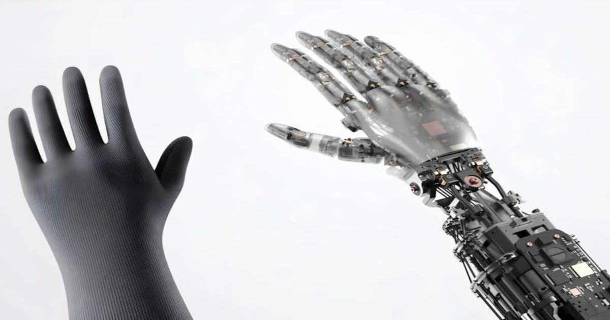

21 степень свободы и 1500 датчиков: Xiaomi разработала кисти рук для роботов-заводчан
Xiaomi представила результаты исследования, по итогам которого была построена роботизированная кисть руки, обладающая 21 степенью свободы и предназначенная для промышленного производства.
Она рассчитана на задачи, в которых робот не просто захватывает предмет, но и с точностью меняет положение пальцев, регулирует силу сжатия и учитывает контакт с поверхностью.
Источник изображений: mi.com